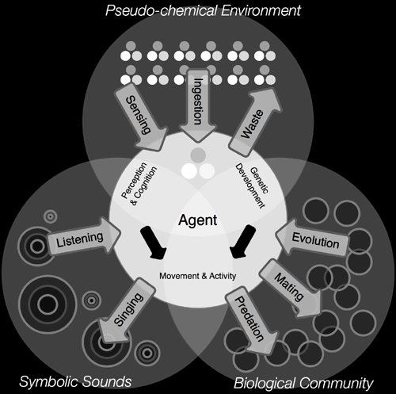

World-building
Given a blank slate of computation, how do you create an immersive, emergent world?
A fundamental requirement of a world with creative potential is that it engender emergent structures and behaviors. A second and equally critical requirement is that it be realizable (computable). These minimal requirements ensure novelty, but not necessarily immersion. To that end, we employ a strategy of embodiment rather than representation. Every structural observable must have a systemic function within the world. Furthermore, a genealogical account must be given as to how every structure and function emerges from the basic initial elements (and how it disappears). Embodiment offers a means to preserve a sense of coherent materiality despite the requirement of unpredictable emergence.

Fig. 2. Screenshots of several prototypes developed for Artificial Nature.
The ecosystem has been identified as a productive metaphor and mechanism for the generation of creativity without explicit teleology [5, 6]. Ecosystemic models have been shown to be domain-generic, with applications accross many different areas of study incuding ecology, economics, social sciences. The ecosystem also offers clear integrations with other complex systems models [8], providing a suitable overall template to be filled in with particularized models. Our approach has been to prototype many of these models in reduced computational forms rather like artistic studies (Fig. 2). The insights, heuristics and algorithms we glean from these prototypes may gradually develop into a composite whole. Ultimately the aim is not to create an aggregate of distinct models, but to produce a single model with potential for many different kinds of creative development.
We can overcome the incommensurability of specific models by drawing upon more abstract results of bio-inspired philosophy. Excellent examples are Manuel De Landa’s readings of Bergson and Deleuze [3, 4], describing a progressive differentiation of an intensive virtuality into the multiply stratified (as opposed to the assembly of distinct types), emphasizing the importance of developmental or genealogical accounts as to how phenomena, qualities and stabilities emerge. Fortunately the -as-it-could-be stance raises an important distinction of motivation between scientific simulation and Artificial Nature: our constraints may be more flexible, and our mode of validation is aesthetic.
Inanimate field
It has been well demonstrated that relatively simple systems comprising a handful of formal primitives, rules of interaction and spatiotemporal distributions can produce an astonishing range of unpredictable patterns and behaviors. Thermodynamic theory for example suggests a conservation of matter-energy but a continuous decay of structure by entropy in every transaction. Prigogine [13] demonstrated that the introduction of a source of matter-energy flow can push a system far from equilibrium and trigger the self-organization of dissipative structures. We take this model as our starting point in the production of a creative world. This readily simulable model is encouraging for a computationally based creative world. Our ecosystem begins with a spatial field of pseudo-chemical elements, concentrations or morphogens (represented as RGB colors) along with simple diffusion-reaction rules.
Though early prototypes worked with a 2D or 2.5D field for simplicity, the exhibited work employs a fully three-dimensional field. The biggest challenge in the move to three dimensions was not computation but representation; standard field-visualization techniques such as isosurfaces or volume-rendering were deemed to visually obstructive to an immersive experience. We also explored tree-like or rhizomatic structures as more open landscapes through a 3D space. Our final choice however was the use of mobile particles (as accessible coagulations of elements) within a fluid-like environment. Particles have multiple advantages: they can display not only type but also density, with regions of concentration and regions of absence, and furthermore they can indicate vector flow within a liquid medium by their aggregate movements.

Fig. 3. Animate agents in Artificial Nature form the connective tissue between the
various domains and interactions in the ecosystem as a whole.
Animate field
The self-organizing substrate provides the building blocks of biological strata; diverting matter-energy on its path to its inevitable entropic decay through processes of transformation and retention, tweaking the conceptual space of the physical world in order to generate structure. The biosphere introduces apparent autonomy as it adapts and develops more elaborate capability to control the environment around it.
Unfortunately, models for how the animate emerges from the inanimate are less well defined. In the current implementation of Artificial Nature we introduce autonomy artificially in the form of spatially situated concurrent processes. Modeling animacy within an environment can however draw upon extensive research in Multi-Agent Systems, Agent- or Individual-Based Modeling. Agents may drift in the flow of the enclosing environment, and may also use stored energy to trigger autonomously directed movement. Due to the entropic order of the world, agents must constantly exchange elements with their local field in order to gain energy for growth and behavior, and discharge toxic waste. This metabolic process may eventually become fully autopoietic. Since agents may fail to exchange matter-energy sufficiently they may die. In order that communities survive, an organism with sufficient energy storage is granted the capability to reproduce by binary fission.
We also draw upon systems approaches to understanding the processes by which biotic matter forms, to shape how undifferenciated points of autonomy develop into differenciated, constrained organisms, tying form and function (micro and macro) with an in-time account of their mutual emergence [9]. Agents contain virtual genes, hierarchical expressions which, rather than specifying results explicitly, are gradually evaluated to guide development and behavior. An account of how the virtual genes emerge from the prebiotic soup is currently outstanding.
The genes themselves evolve independently of reproduction through lateral gene transfer with other agents in close proximity. Selective pressures upon the gene-pool emerge through the complex feedback between gene expression, organism behavior and environmental conditions (Fig. 3).
Behavioral field
Agent behavior may include movement, growth, chemical exchange, reproduction, perception and self-control. Mapping between perceptual stimulus, internal need and action develops according to an adaptive neural network. Agents may perceive and act upon internal and environmental properties, but also emit and listen to local sonic signals. Though the use of sound is significant to us observers, it is clearly the marking of an existent field with agent information, just as territorial scents may be in an olfactory domain. In our current iteration, sonic signals display the presence of nutrients and more importantly organisms may sing their genome, and adopt the genome of a song heard, thus genetic exchange occurs aurally (and with imperfections). This a priori mapping of sound to behavior is planned to be replaced by a generic mechanism capable of supporting self-organized social behaviors. In the long term, an account must be made as to how these various functions arise in an agents body, just an account must also be made as to how agents themselves originate in the environmental field.
Development platform
Early versions have been prototyped using Max/MSP/Jitter, while the current system is implemented using the LuaAV software framework. LuaAV supported the rapid development of an interactive, audiovisual virtual world, while the embedded language Lua is naturally suited to real-time simulation because of its extensible, dynamic nature and efficient garbage collection.